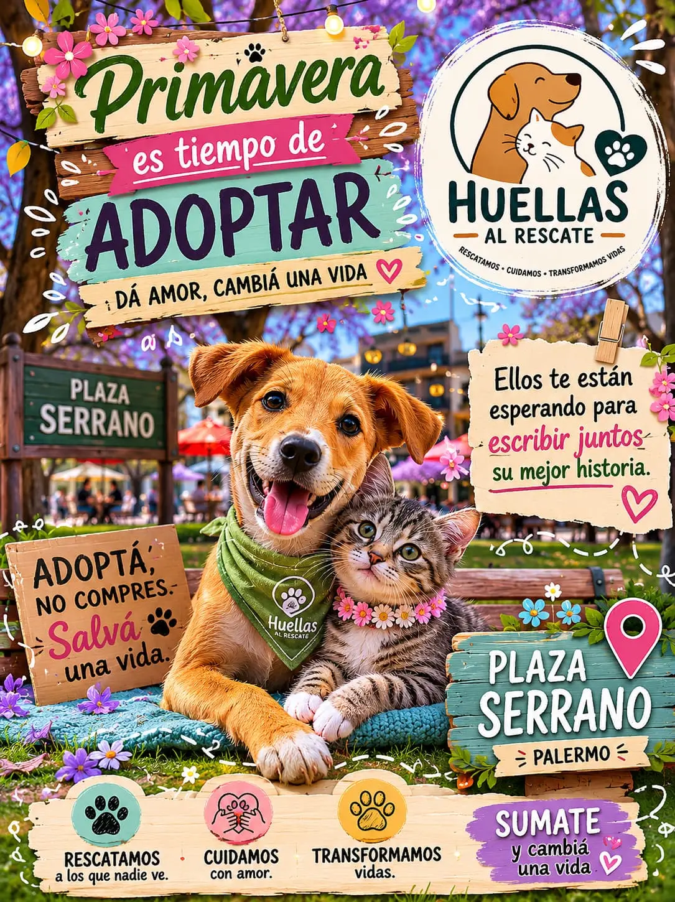
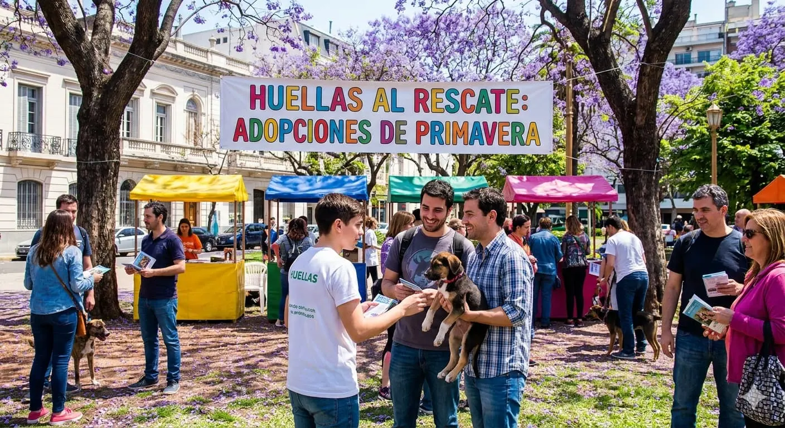
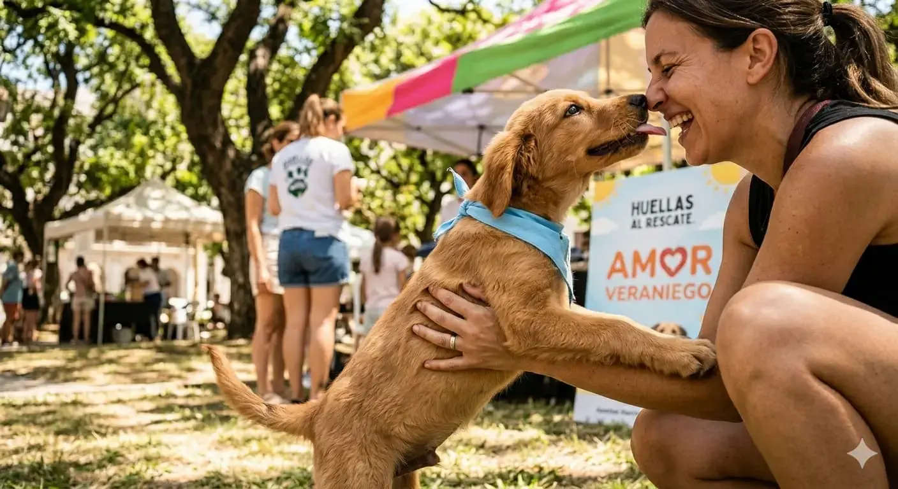
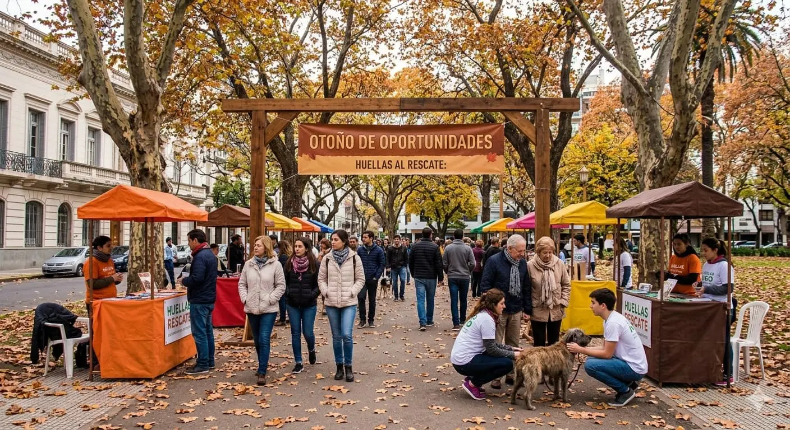
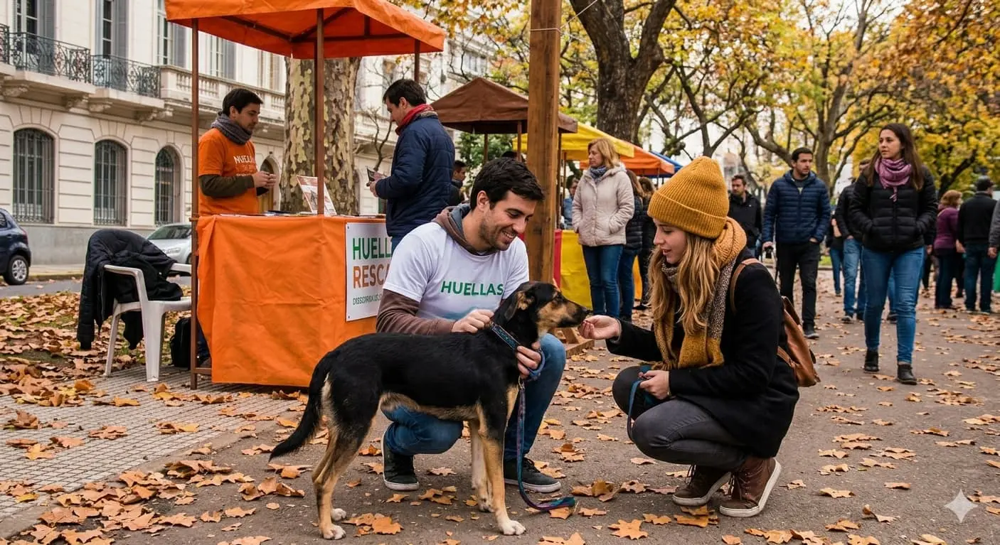
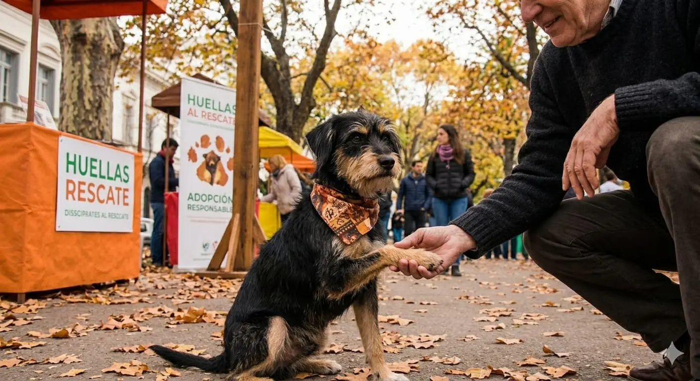
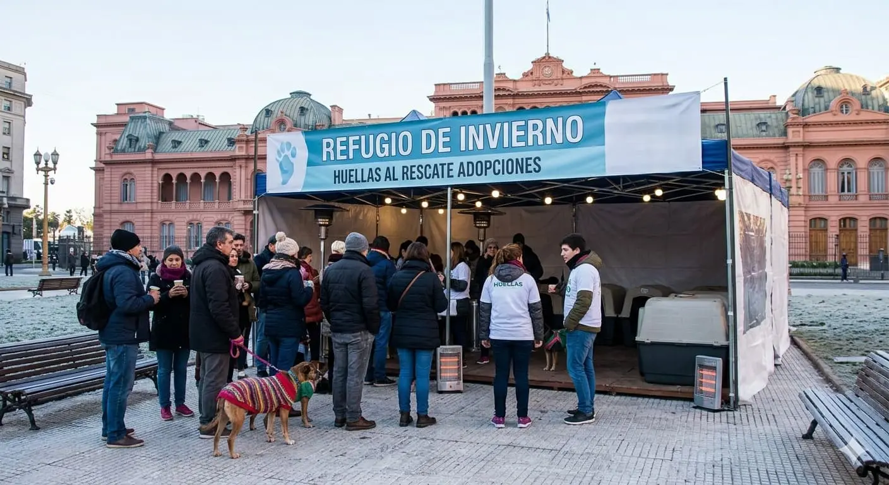
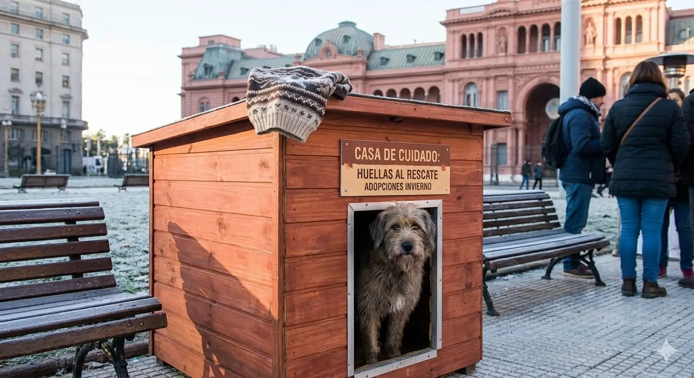
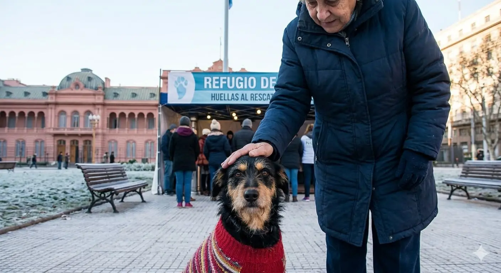

¿Quiénes somos?
En Huellas al Rescate trabajamos, desde hace más de 2 años, en la protección de los animales abandonados y maltratados en Argentina. Nuestro equipo está formado por profesionales y más de 100 voluntarios, que nos ayudan en nuestra labor de rescate de perros y gatos en situación de abandono, brindándoles atención veterinaria y encontrando familias responsables para su adopción.
Al frente de nuestra Fundación, los 365 días del año y sin descanso, está Federico Luna, un luchador incansable que, desde niño, dedica todos sus esfuerzos al rescate y cuidado de los animales abandonados. Apoyar a huellas al rescate es ayudar a Federico y a su equipo a poder seguir ayudando a los animales más desfavorecidos, cada día.
Nuestros Logros
En este lapso de dos años , han rescatado 400 animales, en su mayoría perros, concretando 300 adopciones y en la actualidad, tienen 30 de ellos en tránsito.
La disposición del equipo de rescate es al 100% y a la hora de dar en adopción, se encargan de corroborar, que nuestro amiguitos no vuelva a sufrir maltrato, ni ningún tipo de agravio, por eso, tienen a una persona encargada de entrevistar a todos los futuros dueños, interesados en salvar una vida.
Para mas información visita nuestra sección programas.
Galeria de imagenes adopciones
Cada estación cambia el paisaje… pero también cambia la vida de quienes esperan un hogar 🐾
En primavera florecen las oportunidades, en verano buscamos sombra y agua para protegerlos del calor, en otoño los resguardamos de las lluvias y el viento, y en invierno luchamos para que ningún perro o gato pase frío solo en la calle.
En Huellas al Rescate creemos que el amor y el cuidado no dependen del clima. Cada estación representa un nuevo desafío para los animales en adopción, y por eso trabajamos todos los días para brindarles abrigo, alimento, atención y esperanza mientras esperan encontrar una familia definitiva.
Esta galería muestra momentos reales de cariño, rescate y segundas oportunidades a lo largo del año. Detrás de cada imagen hay una historia que merece ser vista… y un amigo que todavía espera ser elegido. ❤️
🐶🐱 Deslizá, descubrí sus historias y ayudanos a cambiar vidas en cada temporada.
Estación Primavera
Esta serie captura la alegría y el color de la primavera en Buenos Aires, con los jacarandás en flor y una atmósfera vibrante. La estación simboliza nuevos comienzos, acompañando las jornadas de adopción donde cada mascota puede iniciar una vida rodeada de cariño y compañía.



Estación Verano
En verano, la plaza ofrece refugio bajo la sombra de sus grandes árboles, creando un ambiente fresco y animado para las adopciones. Cada encuentro se convierte en una oportunidad para cambiar la vida de un animal rescatado y comenzar una historia de compañía y cariño.



Estación Otoño
El otoño transforma la plaza con sus tonos dorados y naranjas, creando un ambiente acogedor para encontrar una nueva familia. En cada jornada de adopción, la ONG busca unir corazones y brindarles a perros y gatos la posibilidad de una vida mejor.



Estación Invierno
El invierno presenta un desafío, pero la ONG crea refugios cálidos y acogedores, demostrando que el amor no tiene estación. En cada jornada de adopción, perros y gatos encuentran la posibilidad de comenzar una nueva vida, rodeados de cuidado, respeto y una familia que los acompañe para siempre.


